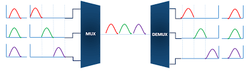
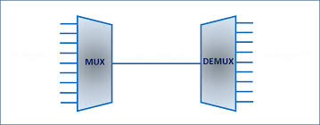

Introducción
FDM divide el ancho de banda en diferentes bandas de frecuencia. Stallings destaca su uso en radio y televisión.
Desarrollo
Cada señal ocupa una frecuencia distinta. Proakis explica que requiere filtros precisos para evitar interferencias.


Conclusión
En conclusión, FDM es ideal para señales analógicas y transmisiones continuas.